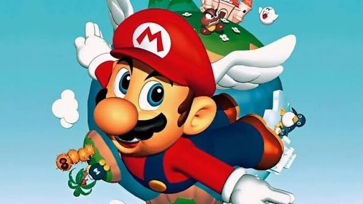
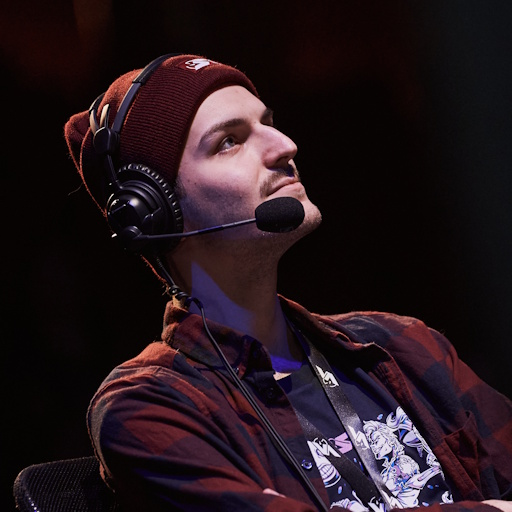
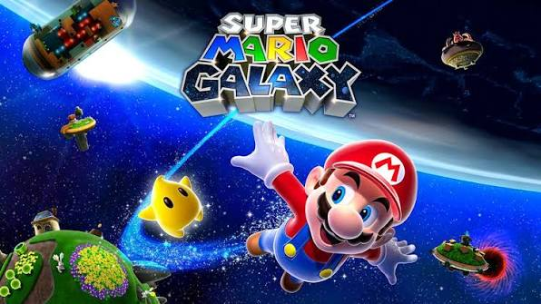
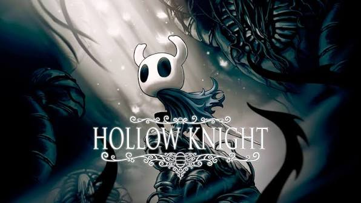
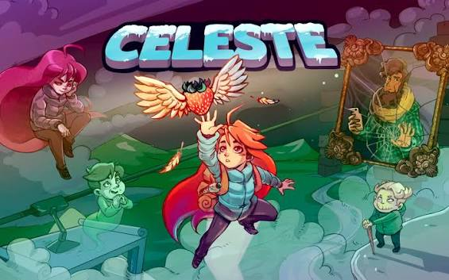
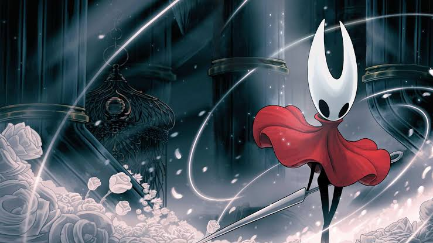
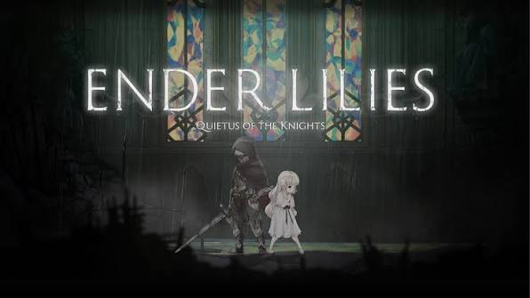
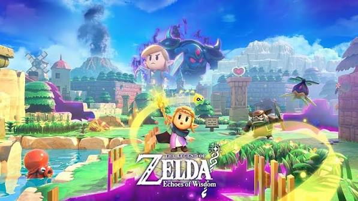

SM64 SPEEDRUN • CAST • ÉVÉNEMENTS
La vitesse,
autrement.
Le speedrun comme performance, mais aussi comme spectacle. Retrouvez ici mes Personal Best et les casts que j'ai réalisés sur différents événements.

i01 / MES SPEEDRUNS
La chasse
aux secondes.
Mes performances personnelles sur les jeux qui comptent dans mon parcours. Plusieurs catégories peuvent être regroupées sur une même fiche pour garder une lecture claire.

GALAXY
HK
CELESTE
SILKSONG
ENDER LILIES
EOF02 / MES CASTS
Quand le run
devient spectacle.
Des runs que j'ai eu le plaisir de caster et de mettre en scène, sur des événements majeurs de la communauté speedrun.
01
BZZZT
BZZZT Any%
RUNNER RadionSPEEDONS 4
TIME22:07
↗
02
PATRICK'S PARABOX
Patrick's Parabox Any%
RUNNER RastatsSPEEDONS 5
TIME32:31
↗
03
HOLLOW KNIGHT
Hollow Knight TrueEnding%
RUNNER Vysualstv VS StratusSGDQ 2024
TIME1:18:30
↗
04
SUPER MARIO GALAXY
Super Mario Galaxy Any% Luigi
RUNNER JhayAGDQ 2026
TIME2:16:53
↗
05
SONIC × SHADOW GENERATIONS
Sonic × Shadow Generations ACT%
RUNNER SnackPigeonUKSG RED 2026
TIME1:19:54
↗